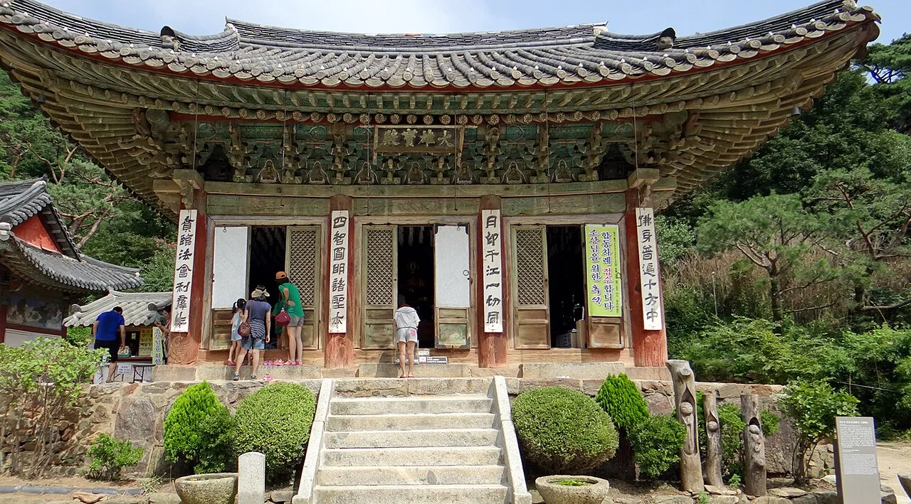
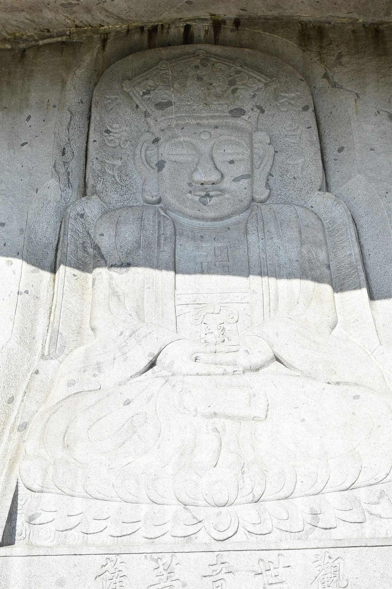
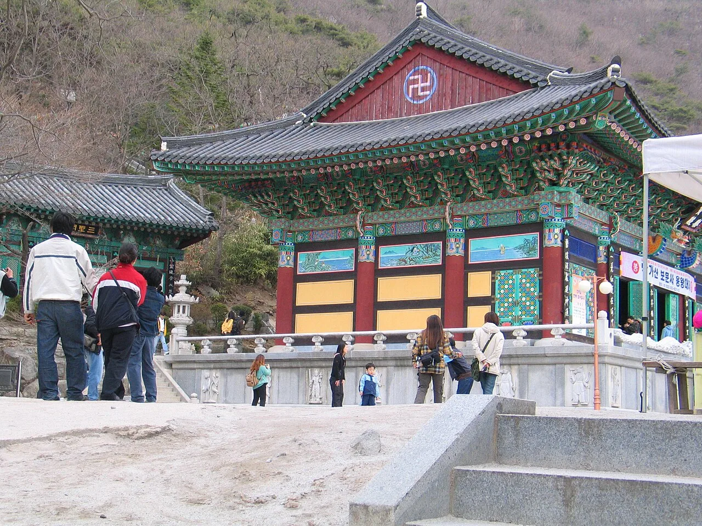
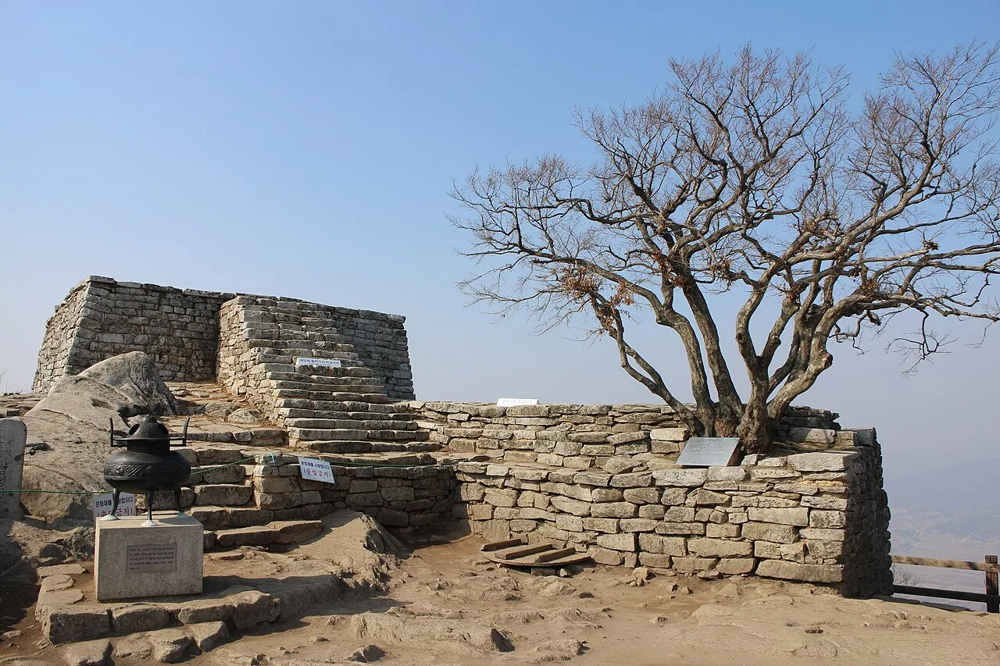
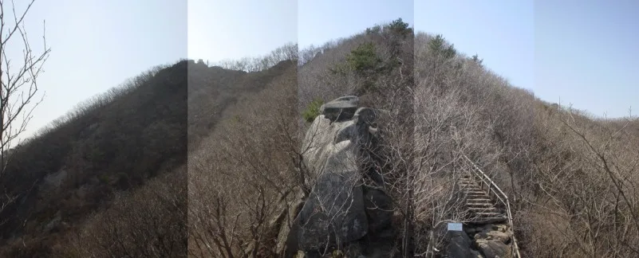
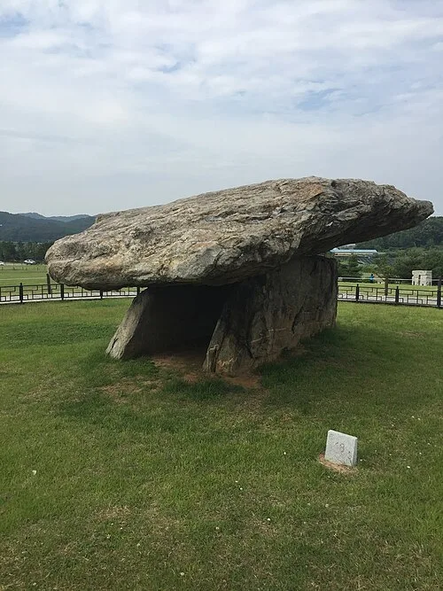

▲ 정족산성(삼랑성) 안에 자리한 전등사 입구 대조루. 계단을 오르면 대웅보전이 있는 경내로 이어진다
인천 강화도는 서울에서 차로 1시간 남짓이면 닿는데도, 섬 하나에 선사시대부터 근대사까지가 압축돼 있다. 정족산성 안에 숨은 천년고찰 전등사, 다리로 이어진 섬 석모도의 관음성지 보문사와 미네랄온천, 단군이 하늘에 제를 올렸다는 마니산 참성단, 유네스코 세계유산으로 등재된 고인돌 유적까지 하루 코스에 다 담을 수 있다. 문제는 정보가 여기저기 흩어져 있다는 점이다. 이 기사는 전등사 대웅보전 처마 밑 나부상 전설부터 각 명소의 2026년 기준 입장료·주차·운영시간, 강화나들길과 엮은 드라이브 코스까지 방문 순서대로 정리했다.
1. 정족산성이 품은 천년고찰, 전등사
▲ 전등사 입구 대조루. 이 문을 지나면 대웅보전이 있는 경내로 이어진다 ⓒ Wikimedia Commons
전등사는 381년(고구려 소수림왕 11년) 아도화상이 창건한 것으로 전해지는 절로, 국내에 현존하는 사찰 중 가장 오래된 축에 든다. 원래 이름은 진종사(眞宗寺)였는데, 고려 충렬왕비 정화궁주가 옥등(玉燈)을 시주한 것을 계기로 '등불을 전한 절'이라는 뜻의 전등사로 이름이 바뀌었다는 이야기가 전해진다.
절이 자리한 산성의 이름은 정족산성(사적, 일명 삼랑성)이다. 단군의 세 아들이 쌓았다는 전설 때문에 삼랑성이라 불리며, 둘레 약 1km의 산성 안에 절과 사고(史庫)가 함께 들어서 있는 구조다. 조선 숙종 4년(1678년)부터는 정족산 사고가 설치돼 조선왕조실록과 왕실 족보를 보관하는 국가 기록물 수호 사찰 역할을 했다. 1866년 병인양요 때는 양헌수 장군이 이끄는 500여 조선군이 이 산성에서 프랑스군을 매복 기습으로 격퇴한 격전지이기도 하다. 성 입구에는 이를 기리는 양헌수 승전비(인천시 기념물)가 남아 있다.
2. 대웅보전의 비밀 — 나부상과 철종

▲ 보물 제178호 전등사 대웅보전. 1615년 착공해 1622년 완공된 다포 양식 건물이다 ⓒ Wikimedia Commons
대웅보전(大雄寶殿)은 보물 제178호로, 임진왜란 때 소실된 뒤 1615년(광해군 7년) 착공해 1622년 준공됐다. 정면·측면 각 3칸의 팔작지붕 건물로, 기둥 사이에도 공포를 짜 넣은 다포 양식이 특징이다. 이 건물을 유명하게 만든 건 따로 있다. 지붕 처마 네 귀퉁이를 떠받치고 있는 벌거벗은 여인 모습의 목각상, 이른바 나부상(裸婦像)이다. 대웅전 중수를 맡았던 도편수가 정을 준 여인에게 돈을 떼이고 배신당하자, '평생 무거운 지붕을 이고 살며 속죄하라'는 뜻으로 조각해 넣었다는 전설이 전해진다. 학술적으로는 고대 인도의 야차상(夜叉像) 전통이 영향을 준 것으로 보기도 한다.
대웅보전 옆에는 보물 제393호 전등사 철종이 있다. 한국 종이 아니라 중국 북송 철종 4년(1097년, 고려 숙종 2년) 하남성 백암산 숭명사에서 주조된 종으로, 일제강점기 금속 공출 과정에서 국내로 흘러들어온 것을 광복 후 부평군기창에서 발견해 전등사로 옮겨왔다. 높이 1.64m에 용 두 마리가 등을 맞댄 종뉴(鐘鈕), 몸체를 두른 8괘 문양 등 한국 범종과는 확연히 다른 생김새여서 눈여겨볼 만하다.
| 항목 | 내용 |
|---|---|
| 입장료 | 무료(2023년 5월 폐지) |
| 주차료 | 소형 3,000원, 대형 8,000원(현금·카드 가능) |
| 관람시간 | 09:00~17:30, 연중무휴 |
| 위치 | 인천 강화군 길상면 전등사로 37-41 |
3. 다리 건너 석모도 — 보문사 눈썹바위 마애관음보살좌상

▲ 낙가산 눈썹바위에 새겨진 보문사 마애관음보살좌상. 높이 9.2m, 1928년 조각됐다 ⓒ Wikimedia Commons
강화도 서쪽 끝에서 석모대교를 건너면 석모도다. 다리가 놓이기 전에는 배로만 오가던 섬이었지만, 2017년 연륙교 개통 이후로는 강화 본섬에서 승용차로 10분 안팎이면 닿는다. 석모도의 중심 명소는 보문사(普門寺)다. 635년(신라 선덕여왕 4년) 창건된 것으로 전해지는 고찰로, 낙가산 관음성지로 꼽히며 남해 보리암, 동해 낙산사와 함께 한국 3대 관음성지로 불린다.
보문사에서 가장 유명한 볼거리는 절 뒤편 낙가산 중턱 눈썹바위 절벽에 새겨진 마애관음보살좌상(인천시 유형문화유산)이다. 1928년 금강산 표훈사 주지와 보문사 주지가 함께 조각한 것으로, 높이 9.2m·폭 3.3m에 달한다. 이곳에서 기도하면 아이를 점지받는다는 이야기가 전해지며 지금도 발길이 이어진다. 절 경내에는 이 외에도 극락보전, 오백나한을 모신 석실, 수령 오래된 향나무 등이 있어 함께 둘러볼 만하다.

▲ 보문사 경내 용왕당. 절 앞으로 서해 바다가 펼쳐지는 자리에 있다 ⓒ Wikimedia Commons
| 항목 | 내용 |
|---|---|
| 입장료 | 어른 2,000원, 청소년 1,500원, 어린이 1,000원(단체 할인 있음) |
| 주차료 | 소형 2,000원, 대형 5,000원 |
| 비고 | 강화군은 2023년 전등사 입장료를 면제했지만 보문사는 예외로 유지 중 |
※ 입장료(어른 2,000원·중고생 1,500원·초등학생 1,000원)와 운영시간(09:00~18:00)은 강화군청 문화관광 공식 페이지 기준으로 재확인했다. 주차료는 2차 출처 기준이므로 방문 전 한 번 더 확인하는 것이 안전하다.
강화군청 공식 페이지에서 보문사 최신 정보 확인 가능4. 석모도 미네랄온천 — 노천탕에서 보는 서해 낙조
보문사에서 차로 10분 거리에는 석모도 미네랄온천이 있다. 지하 470m에서 끌어올린 중탄산나트륨 온천수를 사용하며, 실내탕과 15개에 이르는 노천탕, 황토방, 옥상 전망대, 족욕탕을 갖추고 있다. 노천탕에 몸을 담근 채 서해로 지는 해를 보는 코스로 특히 인기가 많다. 전등사·보문사로 이어지는 사찰 여행에 온천을 더해 하루를 마무리하기 좋은 동선이다.
| 항목 | 내용 |
|---|---|
| 입장료(대인) | 9,000원 |
| 입장료(소인, 4~7세) | 6,000원 |
| 할인 | 65세 이상·장애인·다자녀가구 등 6,000원, 강화군민 평일 4,000원·주말 6,000원 |
| 운영시간(평일) | 09:00~17:00(입장마감 16:00) |
| 운영시간(주말·공휴일) | 09:00~19:00(입장마감 18:00) |
5. 마니산 참성단 — 단군이 하늘에 제를 올린 자리

▲ 마니산 정상의 참성단. 원형 하단과 방형 상단으로 이뤄진 제천단으로, 사적으로 지정돼 있다 ⓒ Wikimedia Commons
해발 472.1m의 마니산은 강화도에서 가장 높은 산이다. 정상에는 단군왕검이 하늘에 제사를 올렸다고 전하는 제천단 참성단(사적)이 있다. 자연석을 둥글게 쌓은 하단(지름 약 4.5m)과 그 위에 네모나게 쌓은 상단(한 변 1.98m)으로 이뤄진 독특한 구조다. 실제로 매년 양력 10월 3일 개천절에는 이곳에서 개천대제가 열리고, 전국체전 성화도 참성단에서 채화해 왔다.

▲ 참성단으로 이어지는 마니산 계단로. 돌계단과 암릉이 번갈아 나타나는 구간이다
참성단까지 오르는 가장 짧은 코스는 계단로(최단 코스)로, 매표소에서 정상까지 약 2.8km, 왕복 2~3시간이 걸린다. 초반부터 가파른 돌계단이 이어져 체력이 필요하지만, 정상에 서면 강화 갯벌과 서해가 한눈에 들어온다. 가을 단풍철에는 참성단 옆 수령 오랜 소사나무 보호수와 어우러진 풍경으로도 유명하다.
| 항목 | 내용 |
|---|---|
| 입장료(어른) | 개인 2,000원, 단체 1,500원 |
| 입장료(청소년·군인) | 개인 1,000원, 단체 800원 |
| 입장료(어린이) | 개인 700원, 단체 500원 |
| 개방시간(11~2월) | 09:00~17:00 |
| 개방시간(3~5월, 9~10월) | 09:00~18:00 |
| 개방시간(6~8월) | 08:30~18:30 |
| 위치 | 인천 강화군 화도면 마니산로 675번길 18 |
6. 유네스코 세계유산, 강화 고인돌 유적

▲ 강화 부근리 지석묘(사적 제137호). 받침돌 두 개만으로 거대한 덮개돌을 떠받친 북방식(탁자식) 고인돌이다 ⓒ Wikimedia Commons
강화도에는 청동기시대 무덤·제단으로 쓰인 고인돌이 160여 기 남아 있다. 2000년 고창·화순의 고인돌과 함께 유네스코 세계문화유산으로 등재됐다. 그중 대표 격인 강화 부근리 지석묘(사적 제137호)는 하점면에 있으며, 길이 6.5m·너비 5.2m·두께 1.2m에 이르는 거대한 화강암 덮개돌을 얹은 북방식(탁자식) 고인돌이다. 받침돌 두 개만으로 이 거대한 돌을 떠받치고 있는 모습이 인상적이어서, 강화 여행 사진에 빠지지 않고 등장하는 장소이기도 하다. 주변으로 오상리 고인돌군 등 다른 고인돌 유적도 흩어져 있어, 시간이 넉넉하다면 함께 둘러볼 만하다.
국가유산포털에서 부근리 지석묘 상세 정보 확인 가능7. 강화나들길과 드라이브 코스로 엮기
강화도에는 섬 곳곳의 고인돌·왕릉·돈대·갯벌을 잇는 강화나들길 20개 코스가 조성돼 있다. 전등사 인근은 나들길 1코스(심도역사문화길)와 겹치는 구간이 많아, 시간이 된다면 산성 둘레를 걸어보는 것도 좋다. 하루 일정으로 전등사·석모도·마니산을 모두 묶는다면 전등사(오전) → 석모대교를 건너 보문사·미네랄온천(점심~오후) → 강화 본섬으로 돌아와 마니산 참성단(늦은 오후) 순서가 동선 낭비가 적다. 시간이 부족하면 부근리 고인돌은 강화읍에서 마니산으로 가는 길목에 있어 잠깐 들르기에도 부담이 없다.
✅ 강화도 여행, 가기 전 체크리스트
· 전등사는 381년 고구려 아도화상 창건, 정족산성(삼랑성) 안에 위치, 입장료는 2023년 5월 폐지
· 대웅보전(보물 178호) 처마 밑 나부상, 옆에는 중국 북송 종인 철종(보물 393호)
· 병인양요 격전지로 양헌수 승전비가 정족산성 입구에 남아 있음
· 석모도 보문사는 눈썹바위 마애관음보살좌상(9.2m)으로 유명한 3대 관음성지, 입장료 별도 유지
· 석모도 미네랄온천은 대인 9,000원, 노천탕에서 서해 낙조 감상
· 마니산 참성단은 단군이 제천의식을 올렸다는 사적, 계단로 왕복 2~3시간
· 강화 부근리 지석묘 등 고인돌 유적은 2000년 유네스코 세계문화유산 등재
· 강화나들길 20개 코스가 전등사·고인돌·갯벌을 걷기 코스로 연결